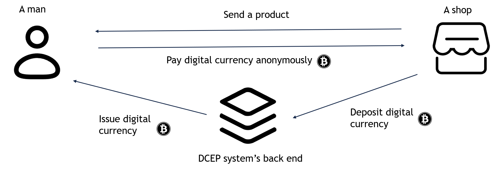
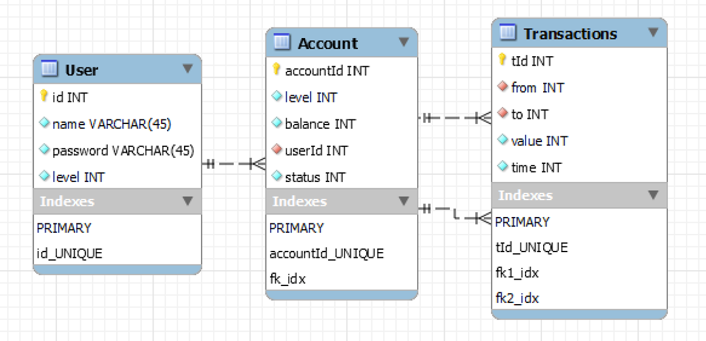
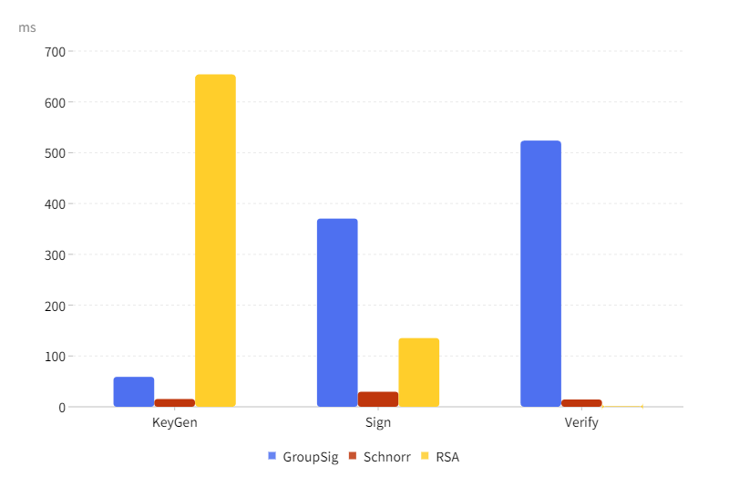

Group member:Luo tianyuan, Shen Yixuan, Feng Xiangdi, Cao Tianming, Liu Xiangkun
Mentor:Vivien
Our project aims to build a secure and privacy-preserving digital currency electronic payment system named DCEP, which is the former
name of China’s CBDC(e-CNY) . The system provides a kind of CBDC for users, along with a system for transfer/payment.
Users can use their mobile app to get issued digital currency from the system and use the digital currency to buy products anonymously.

System architecture
Cryptographic algorithms
Backend framework
Mobile application
Monitoring website
Software testing
Since we hope to build the DCEP system, which is usually used for public transferring and consuming, we want to divide it into three modules, that is, mobile
application, back-end framework and monitoring website.
System modules
we need to use many techniques to support the system.
Technical architecture
With the help of these techniques, the functional modules jointly enable functions like authorization, transfer, privacy
protection, and data monitoring.
Functional architecture
Blind Schnorr Signature
Blind signature is a cryptographic technique used in digital cash systems to provide anonymity to the user. In a blind signature scheme, the user's digital cash is first encrypted using a random key. The encrypted digital cash is then sent to the bank, which signs it without being able to see the contents of the message.
We have implemented blind schnorr signature in java based on bip340: a
schnorr signature standard used in bitcoin, and a method used to modify sig-
nature to blind signature.
Blind signature scheme integration
Blind RSA Signature
Similarly, we have implemented blind RSA signature in java, and the key length
is 2048 bit.
Group Signature
We have implemented group signature in java.
The process is described as follows. First, the Group Manager selects a set of parameters and then generates both the user's private key and the group's private key. Once the user receives their private key, they are able to generate a signature. Subsequently, the verifier can recalculate the hash value to verify this signature.
Back-end framework is the most important part of our DCEP system, since it
is responsible for accepting the requests from the users and give them correct
responses when the system performing login, transfer functions and so on.
We use spring boot and JPA to realize the Controller, Service, Repository or DAO
and Model layer. And we use mysql to build and manage the database, which
is connected to the spring boot.
Since we use JAVA language, it helpful for us to implement some cryptographic algorithms. The class diagram and ER diagram are shown below.
Class diagram

ER diagram
We have built an application that can mainly be use to make anonymous
transfers and buy some virtual products. Of course, users can check their account and withdraw or recharge some anonymous money.
Monitoring website is a supplement to the DCEP system, which is used for
internal monitoring and management of all user, account, and transaction information. We need to visualize and analyze data in the form of some figures
and tables in the website.
The website design is illustrated as follows.
Website design
Software testing has played a positive role in our development process, helping
us avoid many errors. We conducted the following kinds of testing to ensure the
correctness and stability of the system.
Unit testing
In our development process, unit testing is mainly used in the development of
cryptographic algorithm functions(signing and verification) and some backend
tool functions(password checking). We mainly focus on check the consitency of
the input and output, and we use the method of equivalence class partitioning
to design test cases.
System Testing
Since we have finished the back-end framework and the android client, we
basically complete the entire system so we conduct functional and performance
testing to verify the system.
We have calculated the average execution time for key generation, signing, and verification of three cryptographic schemes on mainstream PCs, and the results are shown in the graph below.
More experimental results will be presented in the paper.

How to express digital currencies with different amounts?(One of discussions on our paper)
In our system, some amounts can be represented with a blind signature, and
we need a trusted third party to give change if we want to pay a digital currency
worth N dollars for a product worth M(N ≤ M) dollars. The detail is shown in the below picture.
We are thrilled to announce the successful completion of our project, which has resulted in the development of an Android application that enables users to pay or transfer funds without revealing their personal information. This innovative solution provides a secure and anonymous method of conducting transactions, offering users the peace of mind that their financial information is protected.
Furthermore, our team has implemented three different cryptographic schemes that are integrated into our application to further enhance security and privacy. With these schemes in place, users can be confident that their transactions are protected by the most advanced encryption methods available.
Overall, we are proud of the results of our project and believe that it has the potential to revolutionize the way people conduct digital transactions. We look forward to continuing to refine and improve our application in the future to ensure that it meets the evolving needs of our users.